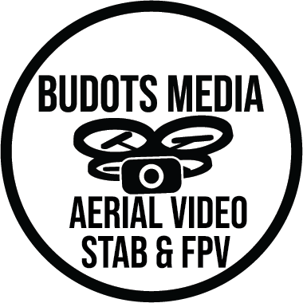
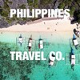

Event Partners
Green Concepts and Events, Cebu. Our longest-running event partnership: they plan and stage corporate and government events across Cebu — we capture them. Foundever Sportsfests, the Asurion Cebu grand launch, Cebu City Charter Day, the ASEAN "Love The Philippines" Regional Showcase, the Cebu Lechon Festival and more.
2024 events reel — "Captured by Budots Media PH" · their channel · Facebook
Institutional
Department of Tourism, Region 7. Official media supplier for Central Visayas: the FMA7, RIDE7 and DIVE7 programs, campaign work under Love the Philippines, and long-term stewardship of the DOT7 media library. See the DOT story and the Eskrima Tour.
Local government units. Projects delivered in five-plus provinces, bid via PhilGEPS — from Lapu-Lapu City events to Typhoon Odette damage assessment.
Community
Philippine Outrigger Canoe Club. From the 227 km Paddle Forward expedition and Olango practices to the 116 km Camotes paddle and the 2026 Shangri-La regatta — we've been in the boat and in the air since 2021.
Production Network
Partner production houses. For select shoots we work with partner media-production companies in the Philippines and produce for foreign video crews from Japan and Korea, with teams based in Cebu, Palawan and Mindanao.
Budots Media Poland — our European entity, with access to European Structural Funds. Budots Media London — our UK presence since the 2016–2020 Hackney and Camden years.
Our Own Ecosystem
Cebu News — multimedia, news and visualizations from the Cebu Metro Area. Facebook
Aerial Data Ops — aerial data capture, laser and photogrammetry scans.

Philippines Travel Company — tours and travel technology, founded 2015 in Maribago. Includes Kalanggaman.com.

Featured by: Atlas Commune ("Big Canoe, Bigger Dream").
← Home